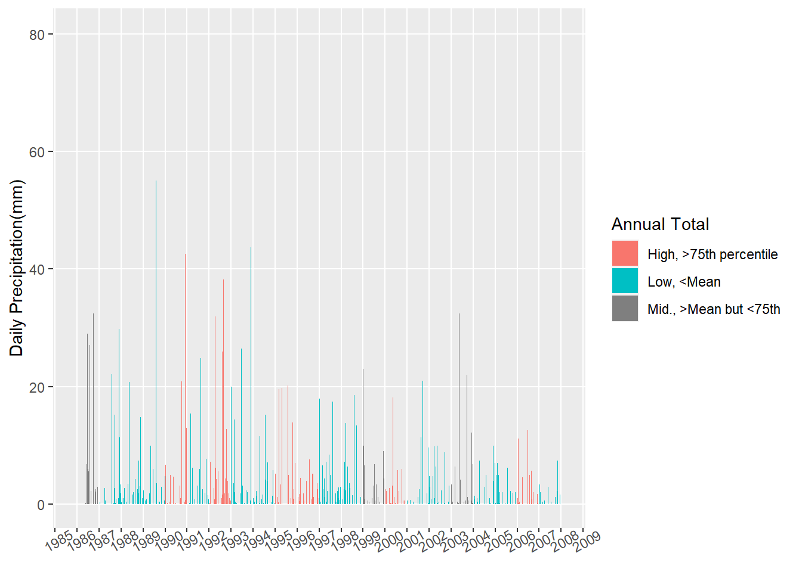
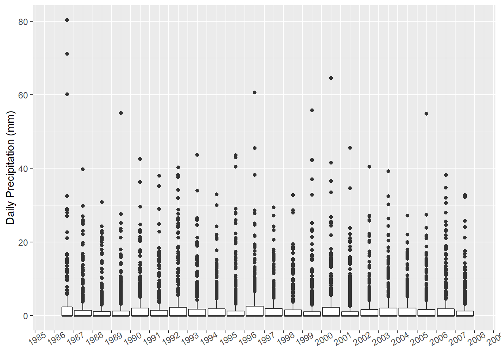

library(projects)
library(here)
requiredPackages = c('janitor','patchwork','tidyverse','flexdashboard', 'data.table','plotly','readxl', 'rgdal','lubridate', 'rgeos','leaflet','sf','raster','DT','knitr','rmarkdown','skimr')
for(p in requiredPackages){
if(!require(p,character.only = TRUE)) install.packages(p)
library(p,character.only = TRUE)
}#load(file = here("/data/02_datawork_objects.RData"))
file = here("data/en_climate_ON_615HMAK.xlsx")
#~/Code/projects/p0001/data/en_climate_ON_615HMAK.xlsx <- first 4 columns (Long, lat, station name, climate ID already removed)
#downloaded from - https://climate.weather.gc.ca/climate_data/daily_data_e.html?hlyRange=1986-06-01%7C2015-05-21&dlyRange=1986-05-01%7C2015-05-20&mlyRange=1986-01-01%7C2015-05-01&StationID=4841&Prov=ON&urlExtension=_e.html&searchType=stnName&optLimit=yearRange&StartYear=1986&EndYear=2007&selRowPerPage=25&Line=0&searchMethod=contains&txtStationName=buttonville&timeframe=2&Day=23&Year=1986&Month=5#
dt_meta<-read_excel(file, sheet='Station', col_names=FALSE)## New names:
## * `` -> ...1
## * `` -> ...2dt_precip<-read_excel(file, sheet='Data')
dt_precip <-dt_precip%>% clean_names()
str(dt_precip) #check to see R has auto assigned variable types properly, and also there are no obvious dud fields## tibble [7,893 x 27] (S3: tbl_df/tbl/data.frame)
## $ date_time : POSIXct[1:7893], format: "1986-05-23" "1986-05-24" ...
## $ year : num [1:7893] 1986 1986 1986 1986 1986 ...
## $ month : num [1:7893] 5 5 5 5 5 5 5 5 5 6 ...
## $ day : num [1:7893] 23 24 25 26 27 28 29 30 31 1 ...
## $ data_quality : logi [1:7893] NA NA NA NA NA NA ...
## $ max_temp_c : num [1:7893] 17 21.1 26.4 25.2 26.2 28.5 31.4 30.4 21.8 27.1 ...
## $ max_temp_flag : logi [1:7893] NA NA NA NA NA NA ...
## $ min_temp_c : num [1:7893] 9.9 9 11 12.7 11.4 ...
## $ min_temp_flag : logi [1:7893] NA NA NA NA NA NA ...
## $ mean_temp_c : num [1:7893] 13.5 15.1 18.7 19 18.8 20.2 22.2 22.9 17.2 16.7 ...
## $ mean_temp_flag : logi [1:7893] NA NA NA NA NA NA ...
## $ heat_deg_days_c : num [1:7893] 4.5 2.9 0 0 0 0 0 0 0.8 1.3 ...
## $ heat_deg_days_flag : logi [1:7893] NA NA NA NA NA NA ...
## $ cool_deg_days_c : num [1:7893] 0 0 0.7 1 0.8 2.2 4.2 4.9 0 0 ...
## $ cool_deg_days_flag : logi [1:7893] NA NA NA NA NA NA ...
## $ total_rain_mm : num [1:7893] 0.2 0 0 0 0 0 0 0 0.9 1.4 ...
## $ total_rain_flag : chr [1:7893] NA NA NA NA ...
## $ total_snow_cm : num [1:7893] 0 0 0 0 0 0 0 0 0 0 ...
## $ total_snow_flag : chr [1:7893] NA NA NA NA ...
## $ total_precip_mm : num [1:7893] 0.2 0 0 0 0 0 0 0 0.9 1.4 ...
## $ total_precip_flag : chr [1:7893] NA NA NA NA ...
## $ snow_on_grnd_cm : num [1:7893] 0 0 0 0 0 0 0 0 0 0 ...
## $ snow_on_grnd_flag : chr [1:7893] NA NA NA NA ...
## $ dir_of_max_gust_10s_deg: num [1:7893] NA NA NA NA NA NA NA NA NA 35 ...
## $ dir_of_max_gust_flag : chr [1:7893] NA NA NA NA ...
## $ spd_of_max_gust_km_h : chr [1:7893] "<31" "<31" "<31" "<31" ...
## $ spd_of_max_gust_flag : chr [1:7893] NA NA NA NA ...#Parameters of interest from scanning dt_precip:
#total_rain_mm
#total_snow_cm
#total_precip_mm
#mean_temp_c
#date_time
#year month day
#agregate precip by year
dt_precip_ann<-dt_precip %>% group_by(year) %>%
summarise(annual_precip_mm=sum(total_precip_mm))## `summarise()` ungrouping output (override with `.groups` argument)skim_without_charts(dt_precip_ann) %>%
dplyr::filter(skim_variable == "annual_precip_mm") | Name | dt_precip_ann |
| Number of rows | 22 |
| Number of columns | 2 |
| _______________________ | |
| Column type frequency: | |
| numeric | 1 |
| ________________________ | |
| Group variables | None |
Variable type: numeric
| skim_variable | n_missing | complete_rate | mean | sd | p0 | p25 | p50 | p75 | p100 |
|---|---|---|---|---|---|---|---|---|---|
| annual_precip_mm | 0 | 1 | 826.01 | 114.95 | 621 | 752.45 | 787.15 | 919.25 | 1064.9 |
#arbitrarily set high/low precip years as those out of bounds of mean & 75th percentile
threshold_lo<-mean(dt_precip_ann$annual_precip_mm)
threshold_hi<-as.numeric(quantile(dt_precip_ann$annual_precip_mm, 0.75))
dt_precip_ann$flag = case_when(
dt_precip_ann$annual_precip_mm<threshold_lo ~"Low",
dt_precip_ann$annual_precip_mm>threshold_hi ~"High")
#joining the demarcated annual precips back to main
dt_precip<-left_join(dt_precip, dt_precip_ann, by='year')
#remove hour & minute from date_time ahead of plotting
dt_precip$date_time <- as.Date(dt_precip$date_time)
lims = c(floor_date(min(dt_precip$date_time), unit='year'), ceiling_date(max(dt_precip$date_time), unit='year'))
#plotting
pl_precip<-ggplot(data=dt_precip, aes(x=date_time, y=total_precip_mm, fill=flag))+
geom_bar(stat='identity')+
scale_x_date(limits=lims, breaks=("1 year"),
date_labels ="%Y")+
scale_fill_discrete(name="Annual Total",labels=c("High, >75th percentile", "Low, <Mean", "Mid., >Mean but <75th "))+
theme(axis.text.x=element_text(angle=30),panel.grid.minor = element_blank(),axis.title.x = element_blank()) + # Remove x-axis label
ylab("Daily Precipitation(mm)") # Set y-axis label)+
ggtitle(dt_meta[1,2]) #grab station from data file so interchangeable## $title
## # A tibble: 1 x 1
## ...2
## <chr>
## 1 TORONTO BUTTONVILLE A
##
## attr(,"class")
## [1] "labels"pl_precip
ggplotly(pl_precip)Saving a copy of image for use
ggsave(
path=here("figures"),
filename="pl_precip_buttonville.png",
plot = pl_precip
)pl_precip_bx<-ggplot(dt_precip, aes(x=date_time, y=total_precip_mm, group=year)) +
geom_boxplot()+
scale_x_date(limits=lims, breaks=("1 year"),
date_labels ="%Y")+
theme(axis.text.x=element_text(angle=30), axis.title.x= element_blank()) + # Remove x-axis label
ylab("Daily Precipitation (mm)") # Set y-axis label
pl_precip_bx
#useless looking boxplots, probably skewed by zeroes, check summary stats
skim(group_by(dt_precip, year))%>%
dplyr::filter(skim_variable == "total_precip_mm")| Name | group_by(dt_precip, year) |
| Number of rows | 7893 |
| Number of columns | 29 |
| _______________________ | |
| Column type frequency: | |
| numeric | 1 |
| ________________________ | |
| Group variables | year |
Variable type: numeric
| skim_variable | year | n_missing | complete_rate | mean | sd | p0 | p25 | p50 | p75 | p100 | hist |
|---|---|---|---|---|---|---|---|---|---|---|---|
| total_precip_mm | 1986 | 0 | 1 | 3.73 | 9.89 | 0 | 0 | 0 | 2.30 | 80.3 | ▇▁▁▁▁ |
| total_precip_mm | 1987 | 0 | 1 | 2.26 | 5.36 | 0 | 0 | 0 | 1.40 | 39.7 | ▇▁▁▁▁ |
| total_precip_mm | 1988 | 0 | 1 | 1.85 | 4.40 | 0 | 0 | 0 | 1.15 | 30.8 | ▇▁▁▁▁ |
| total_precip_mm | 1989 | 0 | 1 | 2.12 | 5.17 | 0 | 0 | 0 | 1.20 | 55.0 | ▇▁▁▁▁ |
| total_precip_mm | 1990 | 0 | 1 | 2.52 | 5.60 | 0 | 0 | 0 | 2.00 | 42.6 | ▇▁▁▁▁ |
| total_precip_mm | 1991 | 0 | 1 | 2.06 | 4.94 | 0 | 0 | 0 | 1.40 | 38.0 | ▇▁▁▁▁ |
| total_precip_mm | 1992 | 0 | 1 | 2.91 | 6.64 | 0 | 0 | 0 | 2.20 | 40.2 | ▇▁▁▁▁ |
| total_precip_mm | 1993 | 0 | 1 | 2.19 | 5.16 | 0 | 0 | 0 | 1.70 | 43.7 | ▇▁▁▁▁ |
| total_precip_mm | 1994 | 0 | 1 | 2.07 | 4.53 | 0 | 0 | 0 | 1.80 | 33.0 | ▇▁▁▁▁ |
| total_precip_mm | 1995 | 0 | 1 | 2.57 | 6.32 | 0 | 0 | 0 | 1.20 | 43.6 | ▇▁▁▁▁ |
| total_precip_mm | 1996 | 0 | 1 | 2.82 | 6.47 | 0 | 0 | 0 | 2.55 | 60.6 | ▇▁▁▁▁ |
| total_precip_mm | 1997 | 0 | 1 | 2.09 | 4.40 | 0 | 0 | 0 | 1.90 | 29.4 | ▇▁▁▁▁ |
| total_precip_mm | 1998 | 0 | 1 | 2.01 | 4.63 | 0 | 0 | 0 | 1.50 | 32.8 | ▇▁▁▁▁ |
| total_precip_mm | 1999 | 0 | 1 | 2.27 | 6.31 | 0 | 0 | 0 | 1.00 | 55.8 | ▇▁▁▁▁ |
| total_precip_mm | 2000 | 0 | 1 | 2.66 | 6.67 | 0 | 0 | 0 | 2.20 | 64.6 | ▇▁▁▁▁ |
| total_precip_mm | 2001 | 0 | 1 | 2.04 | 5.12 | 0 | 0 | 0 | 1.00 | 45.6 | ▇▁▁▁▁ |
| total_precip_mm | 2002 | 0 | 1 | 2.08 | 4.96 | 0 | 0 | 0 | 1.60 | 40.4 | ▇▁▁▁▁ |
| total_precip_mm | 2003 | 0 | 1 | 2.50 | 5.43 | 0 | 0 | 0 | 2.00 | 39.2 | ▇▁▁▁▁ |
| total_precip_mm | 2004 | 0 | 1 | 2.03 | 4.11 | 0 | 0 | 0 | 2.00 | 27.2 | ▇▁▁▁▁ |
| total_precip_mm | 2005 | 0 | 1 | 2.12 | 5.13 | 0 | 0 | 0 | 1.60 | 54.8 | ▇▁▁▁▁ |
| total_precip_mm | 2006 | 0 | 1 | 2.59 | 5.89 | 0 | 0 | 0 | 1.80 | 38.2 | ▇▁▁▁▁ |
| total_precip_mm | 2007 | 0 | 1 | 1.70 | 4.20 | 0 | 0 | 0 | 1.20 | 32.8 | ▇▁▁▁▁ |
#save(..., file = here("projects/p0001/data/03_analysis_objects.RData"))
save_session_info(here("progs", "session_info", "analysis"))## Run time: 2021-02-19 16:03:18 EST
##
## - Session info ---------------------------------------------------------------
## setting value
## version R version 3.6.1 (2019-07-05)
## os Windows 10 x64
## system x86_64, mingw32
## ui RStudio
## language (EN)
## collate English_United States.1252
## ctype English_United States.1252
## tz America/New_York
## date 2021-02-19
##
## - Packages -------------------------------------------------------------------
## package * version date lib source
## assertthat 0.2.1 2019-03-21 [1] CRAN (R 3.6.1)
## backports 1.1.5 2019-10-02 [1] CRAN (R 3.6.1)
## base64enc 0.1-3 2015-07-28 [1] CRAN (R 3.6.0)
## bookdown 0.18 2020-03-05 [1] CRAN (R 3.6.3)
## broom 0.7.0 2020-07-09 [1] CRAN (R 3.6.3)
## cellranger 1.1.0 2016-07-27 [1] CRAN (R 3.6.1)
## class 7.3-15 2019-01-01 [1] CRAN (R 3.6.1)
## classInt 0.4-2 2019-10-17 [1] CRAN (R 3.6.1)
## cli 2.2.0 2020-11-20 [1] CRAN (R 3.6.3)
## codetools 0.2-16 2018-12-24 [1] CRAN (R 3.6.1)
## colorspace 2.0-0 2020-11-11 [1] CRAN (R 3.6.3)
## crayon 1.3.4 2017-09-16 [1] CRAN (R 3.6.1)
## crosstalk 1.0.0 2016-12-21 [1] CRAN (R 3.6.1)
## data.table * 1.12.6 2019-10-18 [1] CRAN (R 3.6.1)
## DBI 1.1.0 2019-12-15 [1] CRAN (R 3.6.3)
## dbplyr 2.0.0 2020-11-03 [1] CRAN (R 3.6.3)
## digest 0.6.22 2019-10-21 [1] CRAN (R 3.6.1)
## distill 1.1 2020-12-02 [1] CRAN (R 3.6.3)
## downlit 0.2.1 2020-11-04 [1] CRAN (R 3.6.3)
## dplyr * 1.0.2 2020-08-18 [1] CRAN (R 3.6.3)
## DT * 0.16 2020-10-13 [1] CRAN (R 3.6.3)
## e1071 1.7-3 2019-11-26 [1] CRAN (R 3.6.1)
## ellipsis 0.3.1 2020-05-15 [1] CRAN (R 3.6.3)
## evaluate 0.14 2019-05-28 [1] CRAN (R 3.6.1)
## fansi 0.4.0 2018-10-05 [1] CRAN (R 3.6.1)
## farver 2.0.3 2020-01-16 [1] CRAN (R 3.6.3)
## fastmap 1.0.1 2019-10-08 [1] CRAN (R 3.6.1)
## flexdashboard * 0.5.1.1 2018-06-29 [1] CRAN (R 3.6.1)
## forcats * 0.5.0 2020-03-01 [1] CRAN (R 3.6.3)
## fs 1.4.2 2020-06-30 [1] CRAN (R 3.6.3)
## generics 0.1.0 2020-10-31 [1] CRAN (R 3.6.3)
## ggplot2 * 3.3.2 2020-06-19 [1] CRAN (R 3.6.3)
## glue 1.4.1 2020-05-13 [1] CRAN (R 3.6.3)
## gtable 0.3.0 2019-03-25 [1] CRAN (R 3.6.1)
## haven 2.2.0 2019-11-08 [1] CRAN (R 3.6.1)
## here * 1.0.0 2020-11-15 [1] CRAN (R 3.6.3)
## highr 0.8 2019-03-20 [1] CRAN (R 3.6.1)
## hms 0.5.3 2020-01-08 [1] CRAN (R 3.6.3)
## htmltools 0.4.0 2019-10-04 [1] CRAN (R 3.6.1)
## htmlwidgets 1.5.1 2019-10-08 [1] CRAN (R 3.6.3)
## httpuv 1.5.2 2019-09-11 [1] CRAN (R 3.6.1)
## httr 1.4.2 2020-07-20 [1] CRAN (R 3.6.3)
## janitor * 1.2.0 2019-04-21 [1] CRAN (R 3.6.1)
## jsonlite 1.7.1 2020-09-07 [1] CRAN (R 3.6.3)
## KernSmooth 2.23-15 2015-06-29 [1] CRAN (R 3.6.1)
## knitr * 1.29 2020-06-23 [1] CRAN (R 3.6.3)
## labeling 0.4.2 2020-10-20 [1] CRAN (R 3.6.3)
## later 1.0.0 2019-10-04 [1] CRAN (R 3.6.1)
## lattice 0.20-38 2018-11-04 [1] CRAN (R 3.6.1)
## lazyeval 0.2.2 2019-03-15 [1] CRAN (R 3.6.1)
## leaflet * 2.0.3 2019-11-16 [1] CRAN (R 3.6.2)
## lifecycle 0.2.0 2020-03-06 [1] CRAN (R 3.6.3)
## lubridate * 1.7.9.2 2020-11-13 [1] CRAN (R 3.6.3)
## magrittr 2.0.1 2020-11-17 [1] CRAN (R 3.6.3)
## mime 0.9 2020-02-04 [1] CRAN (R 3.6.2)
## modelr 0.1.5 2019-08-08 [1] CRAN (R 3.6.1)
## munsell 0.5.0 2018-06-12 [1] CRAN (R 3.6.1)
## patchwork * 1.1.1 2020-12-17 [1] CRAN (R 3.6.3)
## pillar 1.4.7 2020-11-20 [1] CRAN (R 3.6.3)
## pkgconfig 2.0.3 2019-09-22 [1] CRAN (R 3.6.1)
## plotly * 4.9.2.2 2020-12-19 [1] CRAN (R 3.6.3)
## projects * 2.1.1 2020-05-29 [1] CRAN (R 3.6.3)
## promises 1.1.0 2019-10-04 [1] CRAN (R 3.6.1)
## purrr * 0.3.4 2020-04-17 [1] CRAN (R 3.6.3)
## R6 2.5.0 2020-10-28 [1] CRAN (R 3.6.3)
## raster * 3.0-12 2020-01-30 [1] CRAN (R 3.6.2)
## Rcpp 1.0.5 2020-07-06 [1] CRAN (R 3.6.3)
## readr * 1.4.0 2020-10-05 [1] CRAN (R 3.6.3)
## readxl * 1.3.1 2019-03-13 [1] CRAN (R 3.6.1)
## repr 1.1.0 2020-01-28 [1] CRAN (R 3.6.3)
## reprex 0.3.0 2019-05-16 [1] CRAN (R 3.6.1)
## rgdal * 1.4-8 2019-11-27 [1] CRAN (R 3.6.2)
## rgeos * 0.5-3 2020-05-08 [1] CRAN (R 3.6.3)
## rlang 0.4.7 2020-07-09 [1] CRAN (R 3.6.3)
## rmarkdown * 2.5 2020-10-21 [1] CRAN (R 3.6.3)
## rprojroot 2.0.2 2020-11-15 [1] CRAN (R 3.6.3)
## rstudioapi 0.13 2020-11-12 [1] CRAN (R 3.6.3)
## rvest 0.3.5 2019-11-08 [1] CRAN (R 3.6.1)
## scales 1.1.1 2020-05-11 [1] CRAN (R 3.6.3)
## sessioninfo 1.1.1 2018-11-05 [1] CRAN (R 3.6.1)
## sf * 0.8-0 2019-09-17 [1] CRAN (R 3.6.1)
## shiny 1.4.0.2 2020-03-13 [1] CRAN (R 3.6.3)
## skimr * 2.1.2 2020-07-06 [1] CRAN (R 3.6.3)
## snakecase 0.11.0 2019-05-25 [1] CRAN (R 3.6.1)
## sp * 1.3-2 2019-11-07 [1] CRAN (R 3.6.2)
## stringi 1.4.6 2020-02-17 [1] CRAN (R 3.6.2)
## stringr * 1.4.0 2019-02-10 [1] CRAN (R 3.6.1)
## tibble * 3.0.4 2020-10-12 [1] CRAN (R 3.6.3)
## tidyr * 1.1.2 2020-08-27 [1] CRAN (R 3.6.3)
## tidyselect 1.1.0 2020-05-11 [1] CRAN (R 3.6.3)
## tidyverse * 1.3.0 2019-11-21 [1] CRAN (R 3.6.2)
## units 0.6-5 2019-10-08 [1] CRAN (R 3.6.1)
## utf8 1.1.4 2018-05-24 [1] CRAN (R 3.6.1)
## vctrs 0.3.5 2020-11-17 [1] CRAN (R 3.6.3)
## viridisLite 0.3.0 2018-02-01 [1] CRAN (R 3.6.1)
## withr 2.3.0 2020-09-22 [1] CRAN (R 3.6.3)
## xfun 0.19 2020-10-30 [1] CRAN (R 3.6.3)
## xml2 1.2.2 2019-08-09 [1] CRAN (R 3.6.1)
## xtable 1.8-4 2019-04-21 [1] CRAN (R 3.6.1)
## yaml 2.2.0 2018-07-25 [1] CRAN (R 3.6.0)
##
## [1] C:/Users/HoJa/Documents/R/R-3.6.1/library